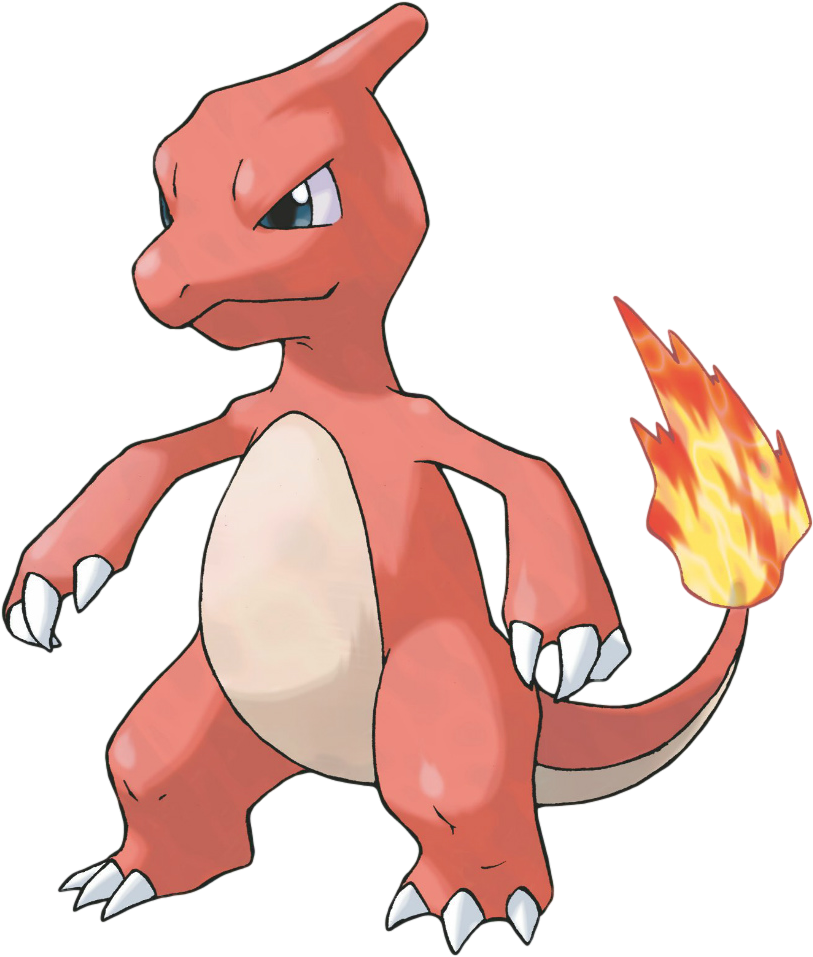

About Charmander
Charmander is a fire type pokemon first introduced in the first generation of the games. Charmander is one of three starter pokemon you can pick from in the original games. Charmander is a reptile like pokemon, its main body is orange in color but the underside of their body is creme colored, they also have blue eyes, they have a fire burning on the end of their tail,
Charmanders Evolution
-

- 
-

Like many pokemon, charmander is capable of evolving when they reach a certain level, charmander evolves into charmeleon at level 16. When charmander evolves they gain a more reddish appearence, large claws, a single horn on the back of their head and increased size, charmeleon is much more powerful and aggressive than charmander. Charmeleon evolves into charizard at level 36, when charmeleon evolves they gain large wings, their one horn becomes two and their size increases significantly along with their power, they lose their reddish color and revert back to orange.
Charmanders Tail represents their health and mood, it burns bright when strong and weak when tired, when a charmander dies its flame burns out.
Charmander is entry number #0004 in the pokedex.
Charmanders Name comes from a combination of the words char and salamander.
Charmanders are typically found in hot areas like craggy mountains, caves and active volcanos.
Charmanders name in Japanese is ヒトカゲ (Hitokage in Romaji) from the Japanese words Hi (火) which means fire and Tokage (蜥蜴) which means lizard, when joined it is Hitokage (火蜥蜴) which literally means "fire lizard" or "fire salamander".